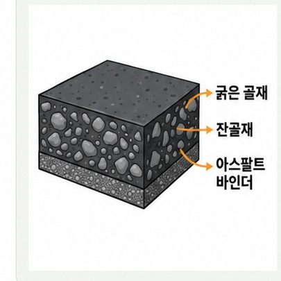
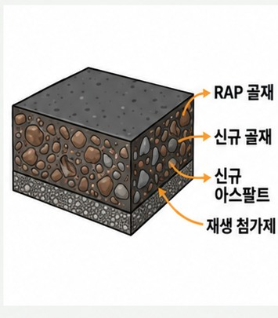
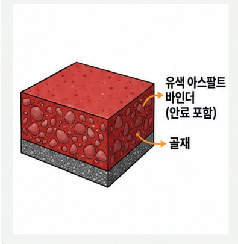
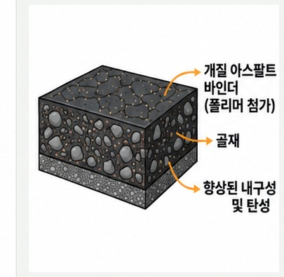
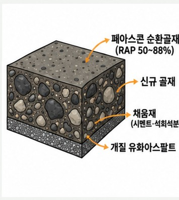
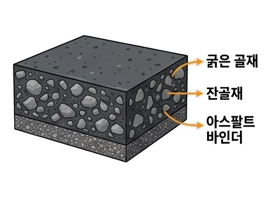
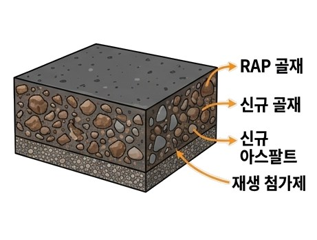
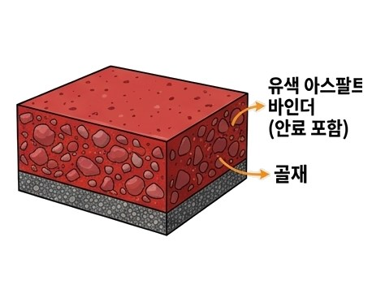
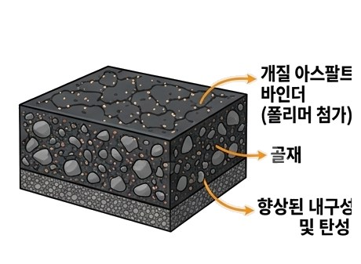

아스팔트 포장의 구성
밀실한 입도로 미끄럼 방지, 빗물 침투 차단. 차량 타이어가 직접 닿는 층으로 평탄성과 소음 저감 효과 우수.
전단응력 완화, 하중을 하부 기층에 고르게 전달. 프라임 코트·택 코트로 상·하부 층 단단히 접착.
굵은 골재 사용, 도로 전체의 휨 저항력과 하중을 지지하는 포장 구조의 뼈대.
상부 하중을 노상으로 분산, 쇄석·자갈 층으로 지지력 확보 및 배수.
자갈·모래 사용, 겨울철 지반이 얼어 솟아오르는 동상 현상 차단.
다져진 최하부 토사 지반, 도로의 최종 하중 지지.
아스콘의 종류
5가지 주요 아스콘 단면 비교 Cross-sections of 5 Major Asphalt Types
일반 아스콘

순환 아스콘

칼라 아스콘

개질 아스콘

순환상온아스팔트


일반 아스콘 Standard Asphalt Concrete
아스팔트 바인더에 굵은 골재·잔골재·채움재를 150~180℃ 고온에서 가열·혼합해 만든 가장 보편적인 도로 포장재.

순환 아스콘 Recycled Asphalt Concrete
폐아스콘을 파쇄·선별한 순환골재를 일정 비율 섞어 만든 친환경·경제적 포장재.

칼라 아스콘 Colored Asphalt Concrete
무색 바인더나 합성수지에 색소를 더해 원하는 색상을 낸 기능성 포장재.

개질 아스콘 Modified Asphalt / PMA
특수 폴리머를 첨가해 하중과 온도 변화에 강하게 버티도록 성능을 높인 고기능성 포장재.
순환상온아스팔트 Recycling Cold Asphalt Concrete
가열 없이 상온에서 순환골재와 유화 아스팔트 바인더를 혼합해 시공하는 저탄소 친환경 아스콘.
아스콘의 재료
아스콘 제조 공정

※ 1차·2차 집진장치(백하우스)에서 회수한 채움재(더스트)는 계량 단계에 재투입되고, 아스팔트 탱크에서 가열된 아스팔트는 믹서에 별도 투입됩니다.
순환 상온 아스팔트 혼합물 생산 및 시공

상온 재활용 아스콘
생산 플랜트

플랜트 생산
상온 재활용 아스콘

하부층(기층) 포설

하부층(기층)
포설 후 다짐


하부층(기층) 시공
직후 표층 포설